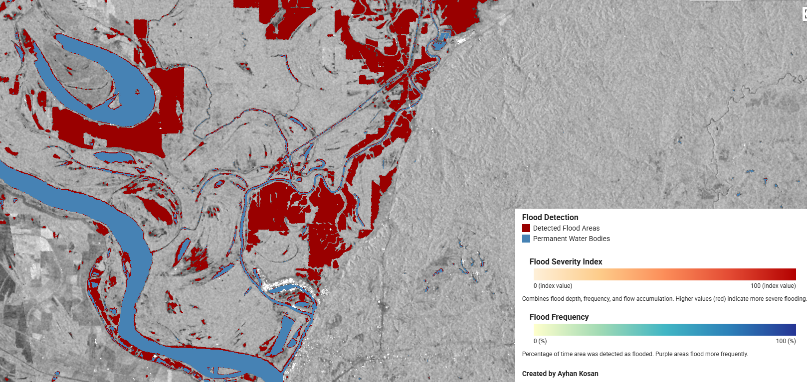
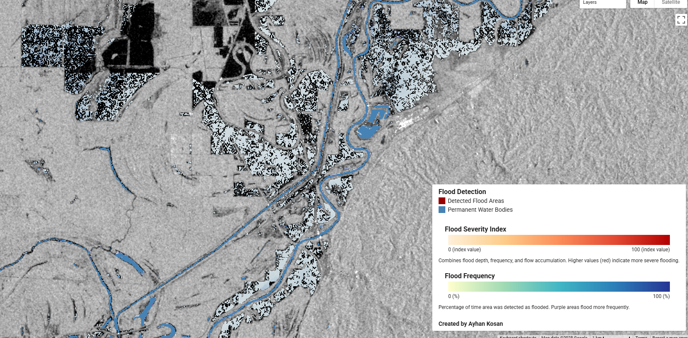
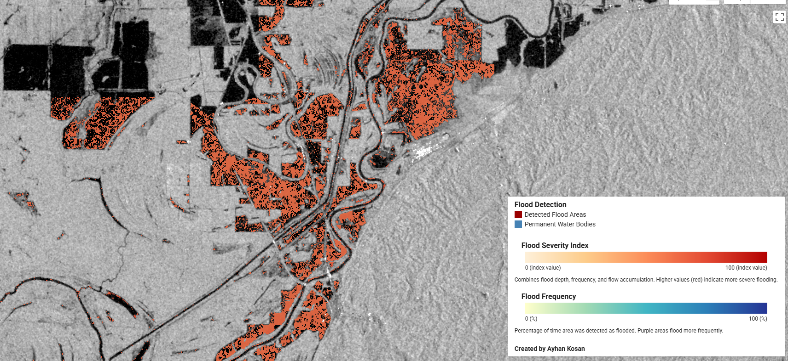

Flood Mapping with Sentinel-1 SAR Data
Project Overview
This project maps and analyzes the 2019 Mississippi River flood events in the Vicksburg region using Sentinel-1 Synthetic Aperture Radar (SAR) data. It focuses on the Yazoo Backwater Flood, a federally declared disaster that left over 550,000 acres underwater across Warren, Issaquena, Sharkey and Humphreys counties for more than six months. The flood caused widespread damage to homes, farmland, infrastructure and ecosystems. The Yazoo Backwater Area, about 1,550 square miles in Mississippi's South Delta, is bordered by the Mississippi and Yazoo River levees. When high water forces the drainage structures to close, rainfall collects with no way out. In 2019, flood levels reached 98.2 feet, the highest since the levees were completed in 1978. The scale of the disaster was made worse by the absence of a pump station, an unbuilt but long-authorized part of the Yazoo Backwater Project that was vetoed by the EPA in 2008.
Technical Approach
- Data acquisition - Collected Sentinel-1 SAR data for the Vicksburg region with a 50km buffer, using both ascending and descending satellite passes for full coverage.
- Speckle filtering - Applied a refined Lee filter to reduce noise and preserve flood boundaries, resulting in cleaner imagery for analysis.
- Water detection - Used a multi-threshold algorithm to analyze backscatter values and separate water from non-water surfaces.
- Flood delineation - Compared detected water against the JRC Global Surface Water dataset to identify new flood zones apart from permanent water bodies, producing a final flood detection layer.
- Topographic refinement - Integrated elevation, slope and flow accumulation data to eliminate false positives and improve accuracy in low-lying areas.
- Severity analysis - Built a flood severity index by combining estimated depth, historical flood frequency and flow accumulation patterns.
Visualization Outputs
- Raw SAR imagery - Base data visualization showing radar backscatter
- Detected water surfaces - All water bodies identified in the analysis
- Permanent water bodies - Historical water features from JRC dataset
- Flood-specific zones - Areas newly inundated during the flood event
- Flood frequency patterns - Visualization of areas prone to repeated flooding
- Severity index - Combined risk assessment based on multiple factors

This image shows the final flood detection layer I created by comparing detected water with historical water data from the JRC Global Surface Water dataset. The red areas represent flood waters that are not part of permanent water bodies (shown in blue). I used topographic data and distance-based probability weighting to refine my detection, eliminating false positives in higher elevation areas while focusing on areas within 7000m of permanent water bodies.

In this visualization, I've displayed flood frequency data derived from the JRC Global Surface Water dataset, showing areas that flood more frequently in purple shades. The information helps me identify areas prone to repeated flooding, which is useful for long-term planning.

This shows the enhanced flood severity index, which combines three key factors I weighted: estimated flood depth (60% weight), historical flood frequency (20% weight) and flow accumulation (20% weight).